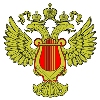

|  | Министерство культуры Российской Федерации Портал Культура.рф Проект «Образы России» |
The memorial estate Abramtsevo
Vrubel's brench
Ceramic bench installed in 1915 on an artificial section of the park - ""Tanonov nose"", named after the Mamontov family's servant Y. Tanonov, who have settled the garden here. The bench is a rare example of small architectural forms, it was made by Abramtsevo ceramic workshop. The bench is decorated with tiles upon M.Vrubel and other artist's sketches.
Part of the tiles has been lost. In 1965-1971 the bench was restored by V.Nevsky, conservator of the museum, and ceramist V. Seryogin, who used technology of Abramtsevo ceramics.